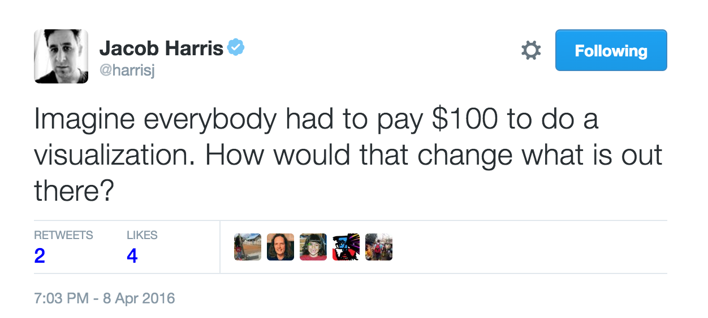

Big Data Visualization in the Browser
Interactive graphics with D3, Crossfilter, and DC
My Question for today: What can we learn from domestic US air-traffic data?
That question is really vague
- In which respect?
- Overall frequency?
- For a specific airport?
- For a specific airline?
- For a specific date?
Problem #1: Often you do not even know the question
What do you do when you have no clue?
Solution #1: You play around to learn
D3.js: Dynamic graphics in the browser
Interactive graphics are the basis of playing around
D3.js
- http://d3js.org/
- Transform your data into visualizations in the browser
- Style of programming declarative
- Main field of use are diagrams using SVG (but D3 is not limited to that)
- Data is bound to SVG elements which change once the data changes
Problem #2: Data might be really big and multivariate
Solution #2: Use indexes and multidimensional filtering in the browser
Explore data to gain insights
Crossfilter: Filtering millions of data sets in real time
- http://square.github.io/crossfilter/
- Can filter up to millions of data sets in real time in the browser
- Data sets are indexed when loaded
- You specify what you want to filter using dimensions
The data
// this is how the data for our flights looks like
console.log(flights[0]);
{
"Month": "9", // part of timestamp (year implied)
"DayofMonth": "5", // part of timestamp (year implied)
"UniqueCarrier": "US", // categorical
"AirTime": "67", // numerical
"ArrDelay": "22", // numerical
"DepDelay": "31", // numerical
"Origin": "MCO", // categorical
"Dest": "CLT", // categorical
"Distance": "468", // numerical
"Cancelled": 0 // categorical
}
Where does the data come from?
- http://stat-computing.org/dataexpo/2009/
- All domestic US flights from 1987 to 2008, grouped per year
- Format CSV
- 2001 data reduced using awk
- Some columns cut off using cut
- A variation of this uses Elasticsearch to dynamically query for intervals
Caution
Interpretation already starts with selection of input data sets
- Different time ranges can give very different results
- What columns are relevant is not easy to say
- In the first version of the talk I ignored 'cancelled' leading to bad results
- Bad mistakes in this phase of the processing can not be healed in later steps
- Even the 'raw' data contains a lot of assumptions and interpretations from the initial creator
Crossfilter Sample Code
// creating a new crossfilter (multi-dimensional dataset)
// flights array contains all flights for a single month
flight = crossfilter(flights);
console.log(flight.size()); // 490698
// creating a dimension for all carriers of all flights
carrier = flight.dimension(function (d) {
return d.UniqueCarrier;
});
// group() reduces this dimension to distinct values
var distrinctCarriersGroup = carrier.group();
console.log("Distinct carriers: " + distrinctCarriersGroup.size());
// 12
// filter just for TW
carrier.filter("TW");
// groupAll() creates a group intersecting all current filters
// Trans World Airlines, became part of American Airlines in 2001
console.log("TW flights", flight.groupAll().value()); // 19427
// display first 10 matches
console.log(flight.top(10));
Problem #3: How to make that interface more accessible?
Writing JavaScript code is not most convenient to do that
Also not accessible to non programmers
How do you find connections?
Solution #3: Combine crossfilter with D3
dc.js: Charting with D3 and Crossfilter
- http://dc-js.github.io/dc.js/
- Prebuilt integration of D3 and Crossfilter
- offers a couple of diagram types that are useful for interactive big data
- bar
- pie
- many more
Problem #4: Which diagram types to choose and how to arrange them?
NO
Solution #4: That is the hard part
Rather an art than a craft
How can I make this valuable?

Choose the graphical encodings...
... that are best visually decoded.
Graphical Perception
Graphical Encodings

http://strataconf.com/big-data-conference-ny-2015/public/schedule/detail/43411
Clear Vision, avoid chartjunk
E.R. Tufte
How I really designed it

Order
Ordering Values: Possisbly first pie chart ever

http://blog.visual.ly/12-great-visualizations-that-made-history/
Pie Charts have drawbacks
Hard to compare their segments...
... except for the classic case of a missing segment

Order (Part #1): Display Carriers as a Pie Chart

Code for creating the pie chart
var pieChartCarriers = dc.pieChart("#pie");
pieChartCarriers
.slicesCap(5)
.dimension(carrier)
.group(carrier.group().reduceCount());
Connect
Connect (Part #2): Origin, Destination, Carriers combined

Time
Time Series: London Underground ad from 1928

Time Series (Part #3): Filtering using Brushes

Code for creating the line chart
var chart = dc.lineChart("#series");
chart
.dimension(date)
.group(date.group())
.brushOn(true));
Map
Map (Part #4): All flights from Hawaii

Code for creating the map
var stateOriginMap = dc.geoChoroplethChart("#state-origin-map");
stateOriginMap.width(500)
.height(250)
.dimension(stateOrigin)
.group(stateOrigin.group().reduceCount())
.colors(d3.scale.quantize().range(["#E2F2FF", "#C4E4FF", "#9ED2FF", "#81C5FF", "#6BBAFF", "#51AEFF", "#36A2FF", "#1E96FF", "#0089FF", "#0061B5"]))
.colorDomain([0, 20000]));
Summarizing our steps
- specify the domain: US domestic flights 2001
- get the data: CSV (flight data) and HTML (airport by state)
- clean and prepare the data (data munging): awk, cut, etc., jQuery for scraping
- load and index data in the browser: D3 and crossfilter
- create visualizations: D3 and DC.js
- explore using visualizations (this can be done by a non-technical person): browser
Wrapup
- D3 helps you to interactively explore your data visually
- For large amounts of multivariate datasets
- Crossfilter allows for fast multidimensional filtering
- there are limitations to data size, number of data sets, and dimensions
- you might have to make a pre-selection
- still more than a million of data sets are possible
- Use DC for coordinated visualizations with powerful widgets
- Choosing data, dimensions, chart types, and how to connect them is an art rather than a craft
- Data Munging can take up to 70% of effort
Resources
- Google Public Data Explorer
- Our World in Data: Loads of visualizations about how living standards changed
- World Bank Data
- Kyran Dale: Data-visualization with Python and Javascript; Crafting a data-viz toolchain for the web
- Great D3 visualizations
- Data Visualization for Human Perception
- When Data Viz Trumps Statistics
- Worlds, not Stories: data visualization as a macroscope